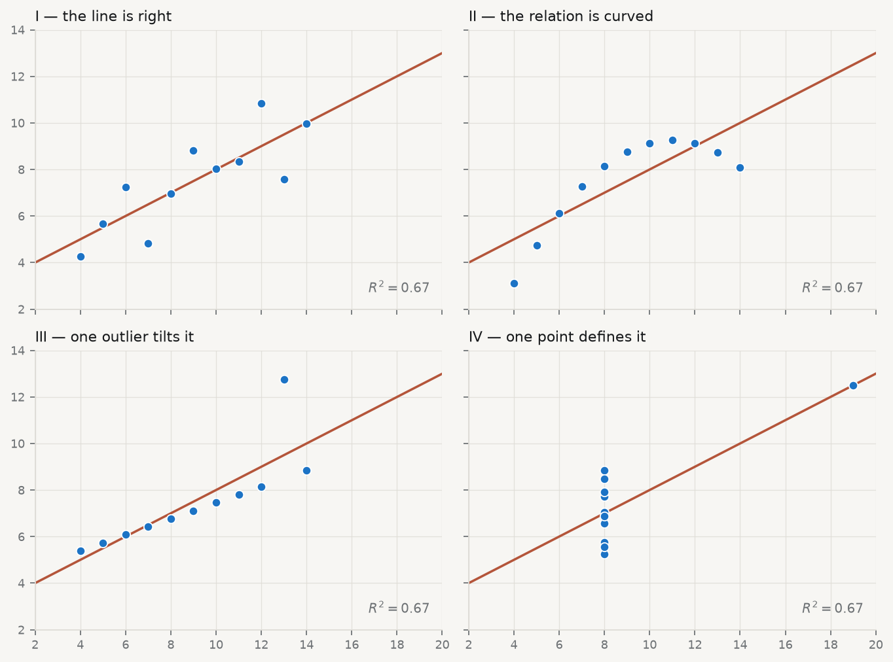
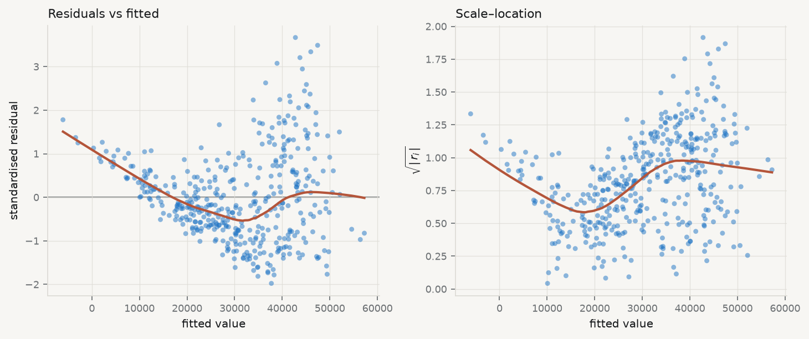
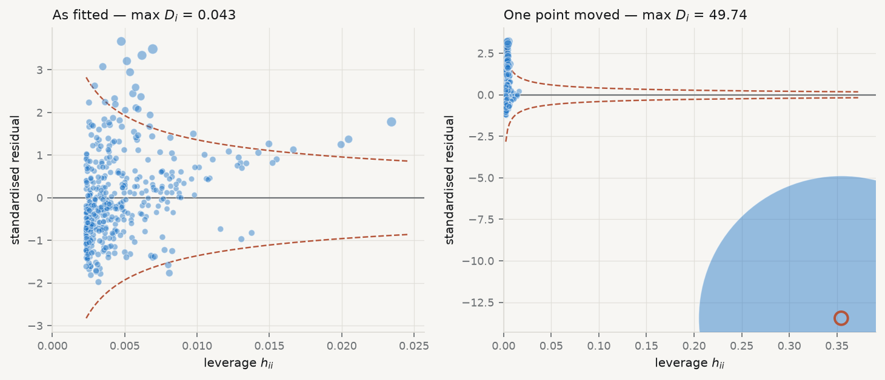
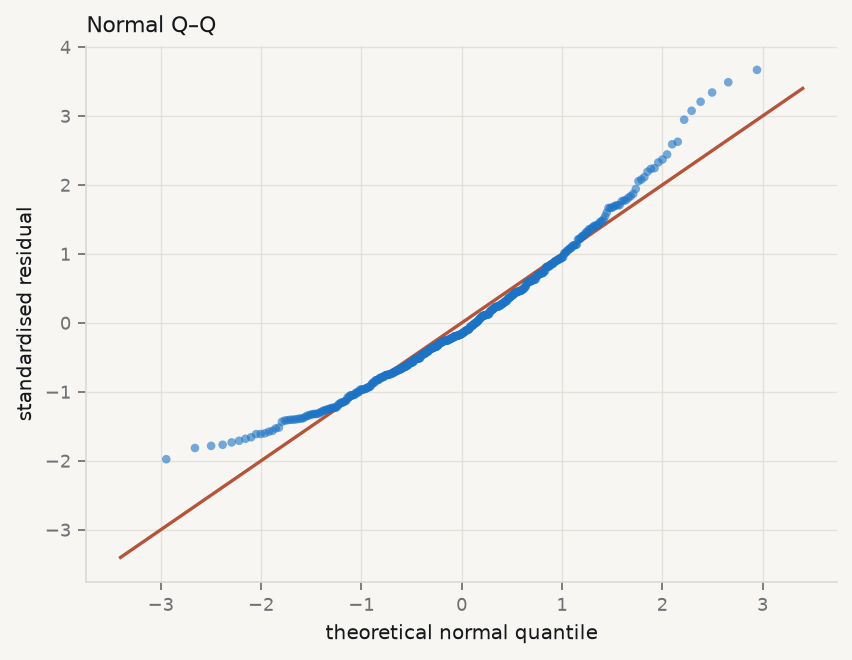

6 Session 3 — Regression: Adequacy, Validity, and Robustness
You have fitted a regression. Can it be trusted?
| Theme of the practice | Which model would survive a referee? |
| Reading | Amsili, van Es & Schindelbeck (2024), Pedotransfer Functions for Field Capacity, Permanent Wilting Point, and Available Water Capacity · article |
| Replication package | 10.7910/DVN/U5DAEP |
| Data | qmib.load("core") — the same regression Session 02 fitted — GDP per capita on productivity |
6.1 The line, and where it came from
Adrien-Marie Legendre published the method of least squares in 1805, in an appendix to a book about the orbits of comets. Four years later Carl Friedrich Gauss published it too, in Theoria Motus, and added that he had been using it since 1795. The priority quarrel that followed was bitter and is still not entirely settled. What matters here is what Gauss added that Legendre did not have: not the recipe, but the justification. Legendre offered least squares as a sensible way to reconcile discordant observations. Gauss asked a different question — under what conditions is this the best you can do? — and that question is the subject of this chapter.
Carl Friedrich Gauss · 1777–1855
Least squares, and the theorem that says when it is the best you can do.
Christian Albrecht Jensen, 1840. Public domain, via Wikimedia Commons.
Set the problem up. You have \(n\) observations, a response \(y\), and a matrix \(X\) holding a column of ones and \(p-1\) predictors. You want coefficients \(\beta\) such that \(X\beta\) is close to \(y\). Least squares defines “close” as the sum of squared vertical distances, and chooses
\[ \hat\beta \;=\; \arg\min_{\beta} \; \lVert y - X\beta \rVert^2 . \]
Squared, rather than absolute, distance is worth pausing on, because the choice is not obvious and it has consequences you will meet later in the chapter. Squaring makes the objective differentiable everywhere, which is what delivers the closed-form solution below; it also makes the fitted values a linear function of \(y\), which is what makes the whole diagnostic apparatus possible. The price is that squaring gives a doubled error four times the weight of a single one, so least squares is structurally sensitive to observations far from the line. Every technique in this chapter for finding influential points is, in a sense, paying off the debt incurred by that square.
Differentiating and setting to zero gives the normal equations \(X^{\top}X\beta = X^{\top}y\), whose solution — whenever \(X^{\top}X\) can be inverted — is
\[ \hat\beta \;=\; (X^{\top}X)^{-1} X^{\top} y . \]
That is an algebraic fact. It requires no assumption about the world, no probability, no error term. Feed it any numbers and it returns coefficients. This is exactly why diagnostics are necessary: the formula never refuses. It has no way to tell you that the relationship is curved, that one country is dragging the whole line, or that the standard errors it reports are fiction. It returns the same confident four decimal places either way.
The statistical content arrives only when you attach a model,
\[ y \;=\; X\beta + \varepsilon , \]
and make claims about \(\varepsilon\). The Gauss–Markov theorem says that if the model is correctly specified, if \(\operatorname{E}[\varepsilon \mid X] = 0\), and if the errors have constant variance and are mutually uncorrelated, then \(\hat\beta\) is the Best Linear Unbiased Estimator: no other estimator that is both linear in \(y\) and unbiased has smaller variance. Note what is not on that list. Normality is not required for Gauss–Markov. It is required for something else — the exactness of the \(t\) and \(F\) distributions in small samples — and confusing the two is one of the most common errors in applied work.
The word “regression” itself arrived later and by accident. Francis Galton, studying the heights of parents and children, found that tall parents had children who were tall but less tall, and called this “regression towards mediocrity” (Galton 1886). He was naming a substantive biological phenomenon. The name stuck to the statistical method he had used to find it, which is why a technique for fitting conditional means is called by a word that means moving backwards.
6.2 Adequacy, validity, robustness
These three words get used loosely and they are not synonyms. The distinction organises everything that follows.
Adequacy — whether the model describes the data you actually have. An adequate model leaves residuals with no remaining structure: nothing in what is left over could have been used to predict \(y\) better. Adequacy is assessed against the sample, and it is mostly a question you answer with plots.
Validity — whether the inferences you draw from the model are warranted: whether the standard errors, confidence intervals and \(p\)-values mean what they claim. A model can be adequate and its inference invalid, most commonly because the errors are heteroscedastic or dependent. Validity is a question about the sampling distribution, not about fit.
Robustness — whether your conclusions survive reasonable changes to the specification, the sample or the estimator. A robust finding is one that does not depend on a single influential observation, one functional form, or one way of computing standard errors. Robustness is a question about stability.
Keeping them apart tells you what a given failure actually costs, and this is the part most often got wrong. The four classical assumptions do not all protect the same thing:
| If this fails | \(\hat\beta\) is | Standard errors are | So the damage is to |
|---|---|---|---|
| Correct specification | biased | meaningless | the estimate itself |
| Constant variance | unbiased | wrong | validity only |
| Independent errors | unbiased | wrong, usually far too small | validity only |
| Normal errors | unbiased | fine in large samples | almost nothing, if \(n\) is large |
Read the table twice. Only the first row damages the coefficient. Rows two and three leave your estimate untouched and destroy your uncertainty — you have the right number with the wrong error bar, which matters enormously if the question is whether an effect can be distinguished from zero. Row four, the assumption students worry about most, is the one that matters least.
A model with \(R^2 = 0.95\) can fail all of it. This is not hypothetical: Anscombe’s four datasets share, to two decimal places, the same means, variances, correlation, regression line and \(R^2\), and they are utterly different (Anscombe 1973).
Every one of those four panels reports \(R^2 = 0.67\) and the same fitted line. Only in the first is that line a description of the data. In the second the relationship is deterministic and curved — the model is not wrong about the strength of the association so much as wrong about its shape, and no amount of extra data will fix it, because more observations of a parabola still make a parabola. In the third a single aberrant point has tilted a line that would otherwise pass almost exactly through the rest; delete it and both the slope and the residual variance change sharply. In the fourth every \(x\) but one is identical, so the slope is determined entirely by one observation: delete it and the slope is not merely different, it is undefined, because \(X^{\top}X\) becomes singular.
Anscombe’s point was not that summary statistics are useless. It was that they are insufficient, and that the missing information is available for the cost of a plot.
6.3 What the residual knows
Write \(\hat y = X\hat\beta\). Substituting the estimator,
\[ \hat y \;=\; X(X^{\top}X)^{-1}X^{\top} y \;=\; Hy , \]
where \(H = X(X^{\top}X)^{-1}X^{\top}\) is the hat matrix — so named because it puts the hat on \(y\). Geometrically it is the orthogonal projection onto the column space of \(X\): it takes the \(n\)-dimensional vector of observations and casts its shadow onto the \(p\)-dimensional subspace the model can reach. That picture is worth holding, because it makes the next two properties obvious rather than algebraic. \(H\) is symmetric (\(H = H^{\top}\)) and idempotent (\(HH = H\)) — projecting a shadow again does nothing, since it is already flat.
The residual vector is what the projection could not reach,
\[ e \;=\; y - \hat y \;=\; (I - H)\, y , \]
and it is orthogonal to every column of \(X\) by construction. That orthogonality is the reason residual plots are informative and the reason they can mislead: \(e\) is guaranteed to be uncorrelated with each predictor whether or not the model is right, so a flat residual plot against \(x\) is not evidence of anything. What is not guaranteed is the absence of non-linear structure, which is exactly what you are looking for.
Now the consequence that governs every diagnostic below. If \(\operatorname{Var}(\varepsilon) = \sigma^2 I\), then
\[ \operatorname{Var}(e) \;=\; \sigma^{2}(I - H), \qquad\text{so}\qquad \operatorname{Var}(e_i) \;=\; \sigma^{2}\,(1 - h_{ii}). \]
The residuals do not have constant variance even when the errors do. An observation with large \(h_{ii}\) has a residual squeezed towards zero as a matter of arithmetic, not because the model fits it well. The most dangerous points therefore look like the best-behaved ones. This is why raw residuals are the wrong thing to plot, and why everything below is built on the standardised residual
\[ r_i \;=\; \frac{e_i}{s\sqrt{1 - h_{ii}}}, \qquad s^2 = \frac{e^{\top}e}{n-p}, \]
which divides out the arithmetic squeeze and restores comparability. Plotting \(r_i\) against \(\hat y_i\) is the single most informative diagnostic there is (Anscombe and Tukey 1963). Under an adequate model the cloud is structureless: flat, centred on zero, of even width. Curvature means the functional form is wrong. A widening fan means the variance is not constant. Both are visible instantly and neither is visible in \(R^2\).
Why plot against \(\hat y\) rather than against \(x\)? Because with several predictors there is no single \(x\) to use, and \(\hat y\) is the one-dimensional summary the model actually commits to. It is also the axis along which heteroscedasticity usually manifests, since the spread of an economic quantity so often scales with its level.

Read Figure 6.2 the way a referee would, which means saying what you looked for before saying what you saw. In the left panel you are looking for curvature in the smoother and for a cloud of even vertical width; the smoother drifts rather than sitting flat, which says a straight line is missing some of the shape of the relationship between productivity and income. In the right panel you are looking for a trend, and there is one: the spread of the residuals grows with the fitted value. Richer countries are not merely richer, they are more variable.
Neither finding is fatal. Both change what you are allowed to say — the first about the functional form, the second about the standard errors — and the rest of this chapter is about what to do with each.
6.4 Leverage: which observations can move the line
Leverage — the diagonal element \(h_{ii}\) of the hat matrix, equal to \(\partial \hat y_i / \partial y_i\): how much the fitted value at observation \(i\) responds to a change in the observed value at \(i\). Leverage is a property of \(X\) alone. It does not involve \(y\) at all, so an observation can have high leverage and fit perfectly.
That derivative reading is the one to carry. If \(h_{ii} = 0.9\), then moving that observation’s \(y\) up by one unit drags its own fitted value up by 0.9 — the line follows it almost exactly, which is another way of saying the line is not being constrained by anything else in that region.
Because \(H\) projects onto a \(p\)-dimensional space, \(\sum_i h_{ii} = \operatorname{tr}(H) = p\), so leverage is a fixed budget of \(p\) shared among \(n\) observations. The average is exactly \(p/n\), and each \(h_{ii}\) lies in \([0,1]\). The conventional flag is \(h_{ii} > 2p/n\) — twice the average — which is a rule of thumb and nothing more (Hoaglin and Welsch 1978). In simple regression it has a transparent form,
\[ h_{ii} \;=\; \frac{1}{n} + \frac{(x_i - \bar x)^2}{\sum_j (x_j - \bar x)^2}, \]
which says exactly what leverage means: a floor of \(1/n\) that everyone gets, plus a term that grows with squared distance from the centre of the predictor space, measured in units of the predictors’ own spread. Two consequences follow directly. Leverage is minimised at \(x_i = \bar x\) and grows quadratically away from it. And it is relative — the same observation is high-leverage in a narrow sample and unremarkable in a wide one, so leverage is a statement about the design, not about the observation.
The fourth Anscombe panel is the extreme case: one point at \(x = 19\) among ten at \(x = 8\) has leverage close to 1, and the line has no choice but to pass through it. Leverage is potential. It says an observation is positioned to move the line. Whether it actually does depends on whether its \(y\) is surprising, and that requires combining leverage with the residual.
6.5 Influence: separating the outlier from the point that matters
Cook’s distance — how much the entire vector of fitted values moves when observation \(i\) is deleted, scaled to be comparable across observations and models: \[ D_i \;=\; \frac{(\hat y - \hat y_{(i)})^{\top}(\hat y - \hat y_{(i)})}{p\,s^2} \;=\; \frac{r_i^{2}}{p}\cdot\frac{h_{ii}}{1 - h_{ii}} . \]
The second form is the one to internalise (Cook 1977). Cook’s distance is a product of two quantities: how badly the point is fitted, \(r_i^2\), and how much power it has to pull, \(h_{ii}/(1-h_{ii})\). Because it is a product, either factor being near zero makes the whole thing near zero — which is why the two things students conflate are genuinely different:
- High residual, low leverage — an outlier in the middle of the predictor range. It inflates \(s\) and therefore widens every standard error in the model, but it barely moves \(\hat\beta\), because it has no lever to pull on.
- Low residual, high leverage — a point far out in \(X\) that the line happens to pass through. It is supporting your slope rather than distorting it, and no misfit diagnostic will flag it. But your slope now rests on it, which is a robustness problem precisely because nothing looks wrong.
- High on both — the case that changes conclusions, and what Cook’s distance is built to find.
Note how the leverage factor behaves: \(h/(1-h)\) is 0.11 at \(h = 0.1\), but 9 at \(h = 0.9\). Influence does not rise gently with leverage, it explodes as \(h_{ii}\) approaches 1. Common cutoffs are \(D_i > 1\) or \(D_i > 4/n\); both are conventions, and Belsley, Kuh, and Welsch (1980) is properly sceptical about treating any of them as a test.
The useful discipline is not the threshold. It is that you look, you name the observations that stand out, and you report what happens to your conclusion with and without them. Deleting an influential point silently is misconduct. Reporting that Luxembourg is influential, and that your slope falls by a third without it, is a finding — and often a more interesting one than the coefficient.

The left panel of Figure 6.3 is what a clean diagnostic looks like: maximum Cook’s distance around 0.04, every point inside the contours, no observation carrying the result. That is a reportable finding in its own right and worth stating explicitly rather than leaving as an absence — “no observation had Cook’s distance above 0.05” is a sentence a referee can check. The right panel moves one observation to high leverage and poor fit; its Cook’s distance jumps by two orders of magnitude and the slope moves with it. Nothing about \(R^2\) warns you which panel you are in.
6.6 Normality, and why it matters least
Of the four assumptions this is the one students check first and the one that matters least. It is not needed for unbiasedness, not needed for Gauss–Markov, and not needed for the standard errors to be right. It is needed for the \(t\) and \(F\) statistics to follow exactly the distributions their tables assume — and only in small samples, because the central limit theorem takes over as \(n\) grows. \(\hat\beta\) is a weighted sum of the \(y_i\), and sums tend to normality whatever they are sums of.
The right check is a normal quantile–quantile plot: sort the standardised residuals, plot them against the quantiles a normal sample of that size would be expected to produce, and look for departure from the diagonal. What you are looking for is not perfection but the shape of the departure. Points curving above the line at the right and below at the left mean heavy tails — more extreme observations than a normal would give — which is a robustness concern, since least squares weights those heavily. A systematic S-shape means skew.
Formal tests exist (SHAPIRO and WILK 1965), and their weakness is instructive: with \(n = 428\) a Shapiro–Wilk test will reject normality on a departure far too small to affect any inference, while with \(n = 20\) it will fail to reject a departure large enough to matter. This is the general pathology of diagnostic testing — the null is never exactly true, so the test measures sample size as much as misspecification — and it is the reason this chapter keeps returning to plots.

6.7 When the variance is not constant
Heteroscedasticity is the failure most often misdiagnosed, so be precise about what it costs. Under heteroscedasticity \(\hat\beta\) remains unbiased and consistent. The coefficients are not wrong. What breaks is \(\operatorname{Var}(\hat\beta)\): the usual \(s^2 (X^{\top}X)^{-1}\) is no longer the right formula, so the standard errors, \(t\) statistics, confidence intervals and \(p\)-values are all computed from an expression that does not apply. You have the right answer with the wrong uncertainty attached — which, if the question is whether an effect is distinguishable from zero, is the part that matters.
The formal test regresses the squared residuals on the predictors and asks whether they explain anything (Breusch and Pagan 1979). Worth running, but the scale–location plot usually tells you first, and the test carries the same sample-size pathology as every other.
The modern response is not to model the variance but to stop relying on the assumption. White’s heteroscedasticity-consistent estimator replaces the misapplied middle of the sandwich with the squared residuals themselves (White 1980):
\[ \widehat{\operatorname{Var}}(\hat\beta) = (X^{\top}X)^{-1} \Big(\textstyle\sum_i e_i^2 \, x_i x_i^{\top}\Big) (X^{\top}X)^{-1}. \]
Look at what that does. The classical formula assumes every observation contributes the same \(\sigma^2\) to the middle; the sandwich lets each contribute its own \(e_i^2\). It is consistent whatever the pattern of the variance, without your having to know or model that pattern — which is why it is called robust rather than efficient. Its small-sample behaviour is poor, because \(e_i^2\) underestimates the variance at high-leverage points, and the corrections HC1, HC2 and HC3 exist to compensate (MacKinnon and White 1985). The practical recommendation is settled: use HC3 by default, certainly whenever \(n < 250\) (Long and Ervin 2000). In statsmodels that is fit(cov_type="HC3") — one argument, no good reason to omit it.
Non-constant variance is not the only specification failure worth testing. The RESET procedure adds powers of the fitted values back into the regression and asks whether they matter (Ramsey 1969); if \(\hat y^2\) has explanatory power, some non-linearity remains unmodelled.
6.8 The assumption nobody plots
Independence has no standard diagnostic plot, which is most of why it goes unexamined — and in this dataset it is the assumption that actually fails.
The core table is not 428 independent observations. It is 30 countries observed over 15 years. Germany in 2014 and Germany in 2015 are not two independent draws from anything: whatever makes German GDP per capita high in one year makes it high in the next. If the errors within a country are positively correlated, the sample carries far less information than its row count suggests, and the standard errors — which are computed from that row count — come out far too small.
Median within-country lag-1 residual autocorrelation: 0.76 across 30 countries.
| Standard errors | Coefficient | SE | \(t\) | 95% CI half-width |
|---|---|---|---|---|
| Classical OLS | 1,111.3 | 41.5 | 26.8 | ±81 |
| HC3 (heteroscedasticity) | 1,111.3 | 43.2 | 25.7 | ±85 |
| Clustered by country | 1,111.3 | 72.3 | 15.4 | ±142 |
The numbers make the point better than any argument. The coefficient is identical in all three rows — as promised, dependence does not bias it. The classical standard error and the HC3 standard error are nearly the same, because HC3 fixes heteroscedasticity and this is not heteroscedasticity. Clustering by country raises the standard error by about three quarters, and the confidence interval widens accordingly. Had the finding been marginal, the classical version would have declared significance that the clustered version withdraws.
This is Moulton’s warning (Moulton 1990), and it is the single most consequential correction in applied panel work. Bertrand, Duflo, and Mullainathan (2004) showed the same mechanism producing spurious significance in difference-in-differences studies at alarming rates; (cameron2015?) is the practitioner’s reference for what to cluster on and when the cluster count is too small to trust. The rule of thumb is to cluster at the level at which treatment is assigned or shocks arrive — here, the country. For pure time-series dependence, the classical test is Durbin–Watson (Durbin and Watson 1950), which detects lag-1 autocorrelation in ordered residuals.
You will meet clustering properly in Session 11. The point here is that a diagnostic chapter that stopped at residual plots would have missed the largest inferential problem in its own running example, because the largest problem does not show up in a residual plot at all. Some assumptions are checked by looking at the data. Independence is checked by knowing how the data were collected.
6.9 Comparing models: what AIC is, and what it is not
Having diagnosed a problem you will usually fit an alternative — a quadratic term, a log transform, an extra control — and need a basis for preferring one. \(R^2\) cannot supply it, because adding any variable, however irrelevant, cannot decrease \(R^2\).
Akaike’s criterion comes at it from prediction rather than fit. It estimates the expected Kullback–Leibler divergence between the fitted model and the process that generated the data, and reduces to
\[ \mathrm{AIC} \;=\; -2 \log \hat{L} + 2k \]
for a model with \(k\) estimated parameters and maximised likelihood \(\hat L\) (Akaike 1974). The first term rewards fit, the second charges two units per parameter, and lower is better. The Bayesian criterion replaces the penalty with \(k \log n\), harsher for any \(n > 7\), and aims at a different target — the true model, if one is among the candidates, rather than the best predictor (Schwarz 1978). They disagree by construction, and which you use should follow from which question you are asking.
Three cautions, in order of how often they are violated.
First, AIC is comparative and unitless. A single AIC value means nothing. Only differences between models fitted to the same observations are interpretable — so dropping rows through missing data silently invalidates the comparison, a mistake that is easy to make and invisible afterwards. By convention \(\Delta_i = \mathrm{AIC}_i - \mathrm{AIC}_{\min}\) below about 2 is weak evidence of any difference (Burnham and Anderson 2004).
Second, AIC does not check adequacy. It ranks the candidates you supply. If every model you supply is misspecified it will rank them and hand you a winner, in the same confident tone it uses when one of them is right. It is a comparison, not a diagnostic, and no substitute for the plots.
Third — the one that ends careers — selecting a model and then reporting its \(p\)-values as though the specification had been chosen in advance is invalid. Freedman demonstrated the scale of the problem with pure noise: regress a random \(y\) on 50 random predictors, keep the significant ones, refit, and the second regression looks impressive (Freedman 1983). Nothing was there. The same mechanism operates whenever the data guide the specification and the resulting \(p\)-values are reported as if they had not — the “garden of forking paths”, which requires no dishonesty at all, only the ordinary practice of looking at your data before deciding what to fit (Gelman and Loken 2014). If you select on AIC, say so, and treat the resulting inference as exploratory.
6.10 When a diagnostic fails, what to actually do
Diagnosis without a remedy is just anxiety. The response depends entirely on which assumption failed, which is why the table at the start of this chapter matters.
Curvature in the residuals — the functional form is wrong, and this is the only failure that biases the coefficient, so it is the only one you must fix rather than accommodate. Add a quadratic term, take logs of a variable whose effect is plausibly proportional rather than additive, or fit a spline. Logs are the usual answer in economics because so many relationships are multiplicative; Box and Cox (1964) gives the systematic treatment. Report that you transformed, and why, before you report the result.
Non-constant variance — do not transform to fix it, since that changes the quantity you are modelling in order to repair its error term. Use HC3 standard errors and say so.
Dependence — cluster at the level at which the dependence arises, or model it explicitly with fixed effects or a panel estimator.
Heavy tails or an influential point — first identify the observation and ask what it is. An influential point is frequently the most informative observation in the dataset rather than an error: Luxembourg’s productivity figures are strange because of cross-border commuting, which is a fact about the economy, not a data problem. Report the result with and without it. Delete only for a reason you can state in the text, and state it there.
Everything at once — reconsider whether one linear model over pooled heterogeneous units is the right object. Often it is not, and the honest answer is a different specification rather than a patched one.
6.11 A short review of the literature
The diagnostic tradition begins with Anscombe and Tukey (1963), who argued that residuals should be examined systematically rather than summarised, and set out the plots still in use. Anscombe (1973) made the case unforgettable with four datasets constructed to share every conventional summary while differing completely — a demonstration reproduced in Figure 6.1 and in nearly every regression text since. The smoother that makes such plots readable is Cleveland (1979).
The geometry was formalised in the 1970s. Hoaglin and Welsch (1978) gave the hat matrix its expository treatment and the \(2p/n\) convention. Cook (1977) introduced the distance that separates outlying from influential observations, and Belsley, Kuh, and Welsch (1980) assembled the apparatus into a book-length treatment, with a scepticism about mechanical cutoffs that has aged well.
Robust inference developed in parallel. White (1980) provided a covariance estimator consistent under arbitrary heteroscedasticity, complementing the earlier Breusch and Pagan (1979) test. MacKinnon and White (1985) showed White’s estimator behaves badly in small samples and proposed corrections; Long and Ervin (2000) evaluated them and recommended HC3, now the applied default. Specification error more broadly is treated by Ramsey (1969), and transformation by Box and Cox (1964).
Dependence has a separate and more consequential literature. Durbin and Watson (1950) gave the classical serial-correlation test; Moulton (1990) showed how badly standard errors mislead when observations cluster within groups; Bertrand, Duflo, and Mullainathan (2004) demonstrated the same failure producing spurious significance in difference-in-differences at alarming rates; and (cameron2015?) is the practical reference for cluster-robust inference and its limits.
Model comparison follows Akaike (1974) and Schwarz (1978), whose criteria differ in penalty and in target — prediction against identification — a distinction Burnham and Anderson (2004) makes carefully and much applied work does not. The cost of ignoring it was quantified early by Freedman (1983) and framed for a modern audience by Gelman and Loken (2014): inference conditional on a specification chosen from the data is not the inference the \(p\)-value describes.
The through-line, from 1963 to now, is a single claim — that a fitted model is a hypothesis about the data, not a summary of it, and that the residuals are where that hypothesis is tested.
6.12 What to report
A diagnostic section that earns its place answers five questions in order, and takes about a page.
- Is the functional form right? Residuals against fitted, with a smoother. Say what structure you looked for and whether you found it.
- Is the variance constant? Scale–location. If not, report HC3 standard errors and say that you did — do not quietly switch and leave the reader to notice the numbers moved.
- Are the observations independent? This one you answer from how the data were collected, not from a plot. If they cluster, cluster the standard errors and report both.
- Does any observation carry the result? Leverage against standardised residual, sized by Cook’s distance. Name what stands out, identify it substantively — Luxembourg, Ireland, 2020 — and give the coefficient with and without it.
- Would a different specification do better? Compare on AIC over the same rows, report \(\Delta\), and state plainly whether the specification was chosen before or after seeing the data.
The failure mode this chapter exists to prevent is reporting \(R^2\) and stopping. The four datasets in Figure 6.1 all have \(R^2 = 0.67\). Three of them should never be described by a straight line, and no amount of staring at \(0.67\) will tell you which three.
6.13 The lecture
Delivered from the slides. What follows is the same material as prose.
6.14 Course Objectives

6.15 Outline
- Diagnostic tools are as important as regression coefficients.
- Today we focus on:
- Residual diagnostics
- Goodness-of-fit measures
- Influence diagnostics
- Information criteria
- Stepwise regression
- Residual diagnostics
6.16 Why Evaluate Models?
“All models are wrong, but some are useful.” — George Box
- Regression results must be tested for adequacy, not just reported.
- Ignoring diagnostics can lead to:
- False significance
- Overconfidence in predictions
- Poor generalization
- False significance
6.17 Introduction: Key Aspects of Model Evaluation
6.18 Key Aspects of Model Evaluation
- Model Accuracy (Adequacy): \(R^2\), Adjusted \(R^2\), RSE.
- Model Validity (Assumptions): Linearity, homoscedasticity, normality of residuals.
- Model Robustness: Outliers, leverage, Cook’s distance (sensitivity to unusual points).
- Model Parsimony/Selection: AIC, BIC, stepwise methods.
6.19 Models: Assessing the adequacy
6.20 Models: Assessing the adequacy
We can assess the adequacy of
the coefficient estimates [individually]
the model [the whole]
First, assessing the adequacy of the coefficient estimates:
We continue the analogy with the estimation of the population mean \(\mu\) of a random variable \(Y\).
A natural question is as follows:
- how accurate is the sample mean \(\hat{\mu}\) as an estimate of \(\mu\)?
We have established that the average of \(\hat{\mu}\)’s over many data sets will be very close to \(\mu\), but that a single estimate \(\hat{\mu}\) may be a substantial underestimate or overestimate of \(\mu\).
Residual Standard Error
Residuals are the leftovers from the model fit: Data = Fit + Residual

A residual is the difference between the observed \(y_i\) and predicted \(\hat{y}\_i\).
\[\epsilon_i = y_i - \hat{y}\_i\]
living in poverty in DC is 5.44% more than predicted.
living in poverty in RI is 4.16% less than predicted.

How far off will that single estimate of \(\hat{\mu}\) be?
- In general, we answer this question by computing the standard error of \(\hat{\mu}\), written as \(SE(\hat{\mu})\).
We have the well-known formula:
\[Var(\hat{\mu}) = SE(\hat{\mu})^2 = \frac{\sigma^2}{n}\] where \(\sigma\) is the standard deviation of each of the realizations \(y_i\) of \(Y\).
Roughly speaking, the standard error tells us the average amount that this estimate \(\hat{\mu}\) differs from the actual value of \(\mu\).
The previous equation also tells us how this deviation shrinks with \(n\) — the more observations we have, the smaller the standard error of \(\hat{\mu}\).
In a similar vein, we can wonder how close \(\hat{\beta}\_0\) and \(\hat{\beta}\_1\) are to the true values \(\beta_0\) and \(\beta_1\)?
- To compute the standard errors associated with \(\hat{\beta}\_1\), it comes down to the following formula:
\[ SE(\hat{\beta_1}) \]
Models: Assessing the adequacy of the coefficient estimates
Standard errors can be used to compute our confidence intervals, i.e. that the true value of \(\beta_1\), will within this interval with a 95% chance:
\[ \hat{\beta}\_1 - 1.96 \times SE(\hat{\beta}\_1),~\hat{\beta}\_1 + 1.96 \times SE(\hat{\beta}\_1) \]
Standard errors can also be used for hypothesis tests:
\[ H_0:~\beta_1=0 \]
\[ H_1:~\beta_1 \neq 0 \]
As already seen, we compute the the t-statistic, which measures the number of standard deviations that \(\hat{\beta}\_1\) is away from 0 (see p-values from last session):
\[ t=\frac{\hat{\beta}\_1-0}{SE(\hat{\beta}\_1)} \]
Assessing the adequacy of the model now:
Once we have rejected the null hypothesis in favor of the alternative hypothesis, we want to quantify the extent to which the model fits the data.
For that, we use:
the residual standard error, and
the \(R^2\) statistic.
The RSE is an estimate of the standard deviation of \(\epsilon\).
Definition: It is the average amount that the response will deviate from the true regression line.
\[ RSE = \sqrt{\frac{RSS}{n-2}} = \sqrt{\frac{\sum\_{i=1}^{n}(y_i-\hat{y}\_i)^2}{n-2}} \]
recall:
\[ RSS= \sum\_{i=1}^{n}(y_i-\hat{y}\_i)^2 \]
Let’s define TSS as the total sum of squares.
\[ TSS = \sum\_{i=1}^{n}(y_i - \bar{y})^2 \]
- TSS measures the total variance in the response Y.
Definition: The \(R^2\) statistic is the proportion of variance explained.
To calculate \(R^2\), we use the formula:
\[R^2 = \frac{TSS - RSS}{TSS} = 1 - \frac{RSS}{TSS}\]
It tells us what percent of variability in the dependent variable is explained by the model.
The remainder of the variability is explained by variables not included in the model or by inherent randomness in the data.

6.21 Goodness-of-Fit — \(R^2\)
\[ R^2 = 1 - \frac{RSS}{TSS} \]
- Proportion of variance in Y explained by the model.
- Example: \(R^2\) = 0.62 means 62% of variance explained.
Limitation: \(R^2\) always increases with more predictors.
Visual: bar chart comparing variance explained (\(R^2\)) across models.
6.22 Adjusted \(R^2\) and RSE
- Adjusted \(R^2\): corrects for number of predictors.
- RSE (Residual Standard Error): average deviation from regression line.
# In the VS Codium terminal, with .venv active: python
import qmib
import statsmodels.formula.api as smf
core = qmib.load("core")
d = core.dropna(subset=["gdp_pc_eur", "productivity_idx"])
# the model Session 02 fitted — now we ask whether it can be trusted
fit = smf.ols("gdp_pc_eur ~ productivity_idx", data=d).fit()
fit.rsquared_adj[1] 0.5487727[1] 2.08183Interpretation:
- Adjusted \(R^2\) can decrease if irrelevant variables are added.
- RSE gives an absolute measure, in units of Y.
Which of the below is the correct interpretation of \(R^2 = 0.38\)?
38% of the variability in the % of HG graduates among the 51 states is explained by the model.
38% of the variability in the % of residents living in poverty among the 51 states is explained by the model.
38% of the time % HS graduates predict % living in poverty correctly.
62% of the variability in the % of residents living in poverty among the 51 states is explained by the model.

Which of the below is the correct interpretation of \(R^2 = 0.38\)?
38% of the variability in the % of HG graduates among the 51 states is explained by the model.
38% of the variability in the % of residents living in poverty among the 51 states is explained by the model.
38% of the time % HS graduates predict % living in poverty correctly.
62% of the variability in the % of residents living in poverty among the 51 states is explained by the model.

6.23 Models: assessing the validity
6.24 Models: assessing the validity
- Linearity
- Nearly normal residuals
- Constant variability
- The relationship between the explanatory and the dependent variable should be linear.
Check using a scatterplot of the data, or a residuals plot.

Anatomy of a residuals plot
\[\%~HSgrad = 81\%~\&~\%~in~poverty = 10.3\]
\[\widehat{\%~in~poverty} = 64.68 - 0.62 \times 81 = 14.46\]
\[\epsilon = {\%~in~poverty} - \widehat{\%~in~poverty}\]
\[\epsilon = 10.3 - 14.46 = -4.16\]
\[\%~HSgrad = 86\%~\&~\%~in~poverty = 16.8\]
\[\widehat{\%~in~poverty} = 64.68 - 0.62 \times 86 = 11.36\]
\[\epsilon = {\%~in~poverty} - \widehat{\%~in~poverty}\]
\[\epsilon = 16.8 - 11.36 = 5.44\]

- The relationship between predictors and outcome should be linear.
- Violations show up as curved patterns in residuals.
Remedies: add polynomial terms, interactions, or reconsider functional form.
Validity: Nearly Normal Residuals
The residuals should be nearly normal.
This condition may not be satisfied when there are unusual observations that don’t follow the trend of the rest of the data.
Check using a histogram.

6.25 Normality of Residuals
- Errors should be normally distributed.
- Important for valid t-tests and confidence intervals.

Visual: Q-Q plot — left = good (points on line), right = heavy tails.
- Residuals should have constant variance across fitted values.
- Violation = heteroscedasticity (funnel shape).
import matplotlib.pyplot as plt
# Scale-Location: is the spread of the residuals constant?
plt.scatter(fit.fittedvalues, np.sqrt(np.abs(fit.get_influence().resid_studentized_internal)),
s=12, alpha=0.6)
plt.xlabel("Fitted values"); plt.ylabel("sqrt(|standardised residual|)")
plt.show()

Remedies: transform Y, add missing predictors, or use robust errors.
The variability of points around the least squares line should be roughly constant.
This implies that the variability of residuals around the 0 line should be roughly constant as well.
Also called homoskedasticity.
Check using a residuals plot.

6.26 The Window Into Model Adequacy
Residual = observed \(y_i\) – predicted \(\hat{y}\_i\).
- Residuals contain all the information the model did not explain.
- Checking them reveals whether assumptions of linear regression hold.

Visual: Residuals scattered randomly vs. curved pattern.
What condition is this linear model obviously violating?
Constant variability
Relationship
Normal residuals
No extreme outliers

What condition is this linear model obviously violating?
Constant variability
Relationship
Normal residuals
No extreme outliers

What condition is this linear model obviously violating?
Constant variability
Linear relationship
Normal residuals
No extreme outliers

What condition is this linear model obviously violating?
Constant variability = heteroskedastic = non-homoskedastic
Linear relationship
Normal residuals
No extreme outliers
6.27 Models: assessing the validity
6.28 Model Robustness/Parsimony and Selection
6.29 Outliers vs. Influential Observations
- Outlier: unusual Y given X.
- Leverage point: unusual X values.
- Influential: changes regression coefficients significantly.
Visual schematic: regression line with one leverage point pulling the slope.
6.30 Leverage
- Leverage measures how far X is from its mean.
- Average leverage = (p+1)/n.
influence = fit.get_influence()
leverage = influence.hat_matrix_diag
print(f"mean leverage {leverage.mean():.4f}, max {leverage.max():.4f}")
print(f"rule of thumb 2p/n = {2 * 2 / len(d):.4f}") 1 2 3 4 5 6 7
0.07341971 0.04993531 0.02665514 0.05725104 0.05436305 0.03001853 0.02279856
8 9 10 11 12 13 14
0.03001853 0.01960804 0.02208673 0.02080544 0.02852708 0.02650600 0.01962584
15 16 17 18 19 20 21
0.01982498 0.03920450 0.02925840 0.03446830 0.07519505 0.02010632 0.02324176
22 23 24 25 26 27 28
0.02131389 0.02324176 0.06459559 0.05296228 0.02715088 0.04368563 0.05263687
29 30 31 32 33 34 35
0.01985210 0.07300617 0.01965889 0.04639058 0.02433662 0.05024716 0.03920450
36 37 38 39 40 41 42
0.02164184 0.01974787 0.02074443 0.01960804 0.05579264 0.05873826 0.03001853
43 44 45 46 47 48 49
0.05579264 0.13146676 0.03614618 0.03162523 0.02421459 0.03334717 0.09662531
50 51
0.02925840 0.05403087 
Leverage matters because a data point with unusual predictor values can pull the regression line toward itself, changing the story the model tells.
6.31 Cook’s Distance
- Combines leverage + residual size.
- High Cook’s D = observation heavily influences coefficients.
cooks_d = influence.cooks_distance[0]
print(f"largest Cook's D {cooks_d.max():.4f}")
print(f"above 4/n ({4/len(d):.4f}): {(cooks_d > 4/len(d)).sum()} observations") 1 2 3 4 5 6
2.938419e-03 2.520652e-04 1.080616e-03 8.976295e-02 1.796106e-02 2.866052e-04
7 8 9 10 11 12
1.897199e-02 9.177618e-03 6.974262e-02 1.088291e-05 8.528512e-05 2.213503e-03
13 14 15 16 17 18
1.057503e-02 1.124157e-04 1.380196e-02 2.813797e-03 4.169181e-04 2.544101e-04
19 20 21 22 23 24
3.257667e-02 2.418426e-04 2.635681e-02 2.955606e-03 1.093662e-05 1.616129e-02
25 26 27 28 29 30
7.248277e-02 3.550370e-04 1.318111e-01 8.571111e-03 2.603736e-02 3.791864e-02
31 32 33 34 35 36
2.779714e-02 8.375544e-02 6.863630e-03 7.974102e-03 3.957810e-02 6.807620e-04
37 38 39 40 41 42
2.363512e-02 4.048523e-04 1.094319e-02 1.250869e-01 9.031568e-03 9.989553e-04
43 44 45 46 47 48
4.971505e-04 4.663828e-02 1.398058e-05 4.636273e-04 6.941264e-03 7.721221e-03
49 50 51
1.616635e-04 4.664654e-03 9.825004e-03 
Cook’s distance plot with threshold marked.
Cook’s distance matters because it shows which data points, if removed, would noticeably change the model’s results.
6.32 Information Criteria — AIC
\[ AIC = -2\log(L) + 2k \]
- Balances fit with penalty for number of parameters.
- Lower AIC = better model (relative).
AIC matters because it helps us avoid models that are too complicated by rewarding good fit but punishing unnecessary extra variables.
6.33 Information Criteria — BIC
\[ BIC = -2\log(L) + k\ln(n) \]
- Similar to AIC but harsher penalty (depends on n).
- Favors simpler models for large samples.
BIC matters because it goes even further than AIC in preferring simpler models, especially when we have a lot of data.
6.34 Stepwise Regression
- Automated selection: forward, backward, or both.
- Based on AIC (or BIC with k = log(n)).
# Python has no step(); compare candidate models directly, which is
# clearer about what you are doing and why.
candidates = [
"gdp_pc_eur ~ productivity_idx",
"gdp_pc_eur ~ productivity_idx + gfcf_meur",
"gdp_pc_eur ~ productivity_idx + gfcf_meur + employment_ths",
]
cols = ["gdp_pc_eur", "productivity_idx", "gfcf_meur", "employment_ths"]
dd = core.dropna(subset=cols)
for formula in candidates:
m = smf.ols(formula, data=dd).fit()
print(f"AIC {m.aic:9.1f} adj R2 {m.rsquared_adj:.3f} {formula}")Start: AIC=76.75
Poverty ~ Graduates
Df Sum of Sq RSS AIC
<none> 212.37 76.751
- Graduates 1 267.88 480.25 116.366Call:
lm(formula = Poverty ~ Graduates, data = poverty)
Coefficients:
(Intercept) Graduates
64.7810 -0.6212 Magic exists… Your first entry into Machine Learning…
6.35 Best Practices and Conclusion
6.36 Key Aspects of Model Evaluation
- Model Adequacy: \(R^2\), Adjusted \(R^2\), RSE.
- Model Validity (Assumptions): Linearity, homoscedasticity, normality of residuals.
- Model Robustness: Outliers, leverage, Cook’s distance (sensitivity to unusual points).
- Model Parsimony/Selection: AIC, BIC, stepwise methods.
6.37 Best Practices
- Check residuals first — assumptions matter.
- Use multiple fit criteria, not just \(R^2\).
- Always investigate influential points.
- Use AIC/BIC to compare, but remember they are relative.
- Stepwise is exploratory — combine with theory.
Final message: Balance predictive adequacy, interpretability, and parsimony.
6.38 Conclusion
6.39 Conclusion
6.40 One more thing…

https://blog.ephorie.de/the-most-dangerous-equation-or-why-small-is-not-beautiful?utm_source=rss&utm_medium=rss&utm_campaign=the-most-dangerous-equation-or-why-small-is-not-beautiful
6.41 References
- James, G., Witten, D., Hastie, T., & Tibshirani, R. (2021). An Introduction to Statistical Learning with Applications in R (2nd ed.). Springer.
- Kutner, M. H., Nachtsheim, C. J., Neter, J., & Li, W. (2005). Applied Linear Statistical Models (5th ed.). McGraw-Hill Irwin.
- Wooldridge, J. M. (2019). Introductory Econometrics: A Modern Approach (7th ed.). Cengage.
6.42 In the practice
6.42.1 Regression: Adequacy, Validity, and Robustness
Open the practice slides · source:
MATH60033A-S03-Practice.qmd
6.42.1.1 The theme of this session
7 Which model would survive a referee?
All ten groups attack this question, each on its own project, and the last twenty minutes assemble the answers.
7.0.0.1 What you are doing
The lecture showed the method on the session’s dataset. You now apply it to your own angle, and to the question your group is actually trying to answer (RESEARCH-MANDATES.md).
The deliverable is not a printout. It is a decision, with the reason written down.
7.0.0.2 Before you start
Everyone in the group pushes at least once this session. Replace XX with your group number — group 07 uses group-07.
git checkout -b group-XX
mkdir -p 03-regression-adequacy-and-validity/02-practice/submissions/group-XX7.0.0.3 1 · Reproduce one result from the paper — 20 min
Take the result the pre-session reading rests on, and reproduce it — or establish that you cannot, and say precisely where it breaks. A failed reproduction that is diagnosed earns full marks; one that is not attempted earns none.
The paper is Amsili, van Es & Schindelbeck (2024), Pedotransfer Functions for Field Capacity, Permanent Wilting Point, and Available Water Capacity, and its replication package (10.7910/DVN/U5DAEP) should already be unzipped at:
03-regression-adequacy-and-validity/data/replication/The session’s own dataset, for comparison:
import qmib
data = qmib.load("core")7.0.0.4 2 · Apply the method to your own angle — 35 min
core = qmib.load("core")
mine = qmib.load("angle_c_country") # your angle — see your dictionary
df = core.merge(mine, on=["geo", "time"], how="inner")Fit the session’s method on your own data. Report what the lecture said to report, in the units of your own variables.
7.0.0.5 3 · Break one assumption — 15 min
Every method in this course rests on something. Find the assumption this one rests on hardest, break it deliberately, and record what happened to your answer. This is the part that carries the marks.
7.0.0.6 4 · Write it down — 20 min
A 250-word note in your submissions folder:
- What you found, in units
- Which assumption you broke, and what it did
- What this result does not license you to claim
7.0.0.7 Submitting
git add 03-regression-adequacy-and-validity/02-practice/submissions/group-XX
git commit -m "Session 03 practice — group XX"
git push -u origin group-XXEveryone pushes at least once. The log is the record of participation.
7.0.0.8 What loses marks
- Reporting \(R^2\) without a single diagnostic plot
- Deleting an influential point without saying what it was
- Reading a residual plot as “looks fine” with no statement of what you looked for
- Choosing a model on AIC and reporting it as though the data selected it
<- The lecture · Session 03 overview
Akaike, H. 1974. “A New Look at the Statistical Model Identification.” IEEE Transactions on Automatic Control 19 (6): 716–23. https://doi.org/10.1109/TAC.1974.1100705.
Anscombe, F. J. 1973. “Graphs in Statistical Analysis.” The American Statistician 27 (1): 17–21. https://doi.org/10.1080/00031305.1973.10478966.
Anscombe, F. J., and John W. Tukey. 1963. “The Examination and Analysis of Residuals.” Technometrics 5 (2): 141–60. https://doi.org/10.1080/00401706.1963.10490071.
Belsley, David A., Edwin Kuh, and Roy E. Welsch. 1980. “Regression Diagnostics.” Wiley. https://doi.org/10.1002/0471725153.
Bertrand, M., E. Duflo, and S. Mullainathan. 2004. “How Much Should We Trust Differences-In-Differences Estimates?” The Quarterly Journal of Economics 119 (1): 249–75. https://doi.org/10.1162/003355304772839588.
Box, G. E. P., and D. R. Cox. 1964. “An Analysis of Transformations.” Journal of the Royal Statistical Society Series B: Statistical Methodology 26 (2): 211–43. https://doi.org/10.1111/j.2517-6161.1964.tb00553.x.
Breusch, T. S., and A. R. Pagan. 1979. “A Simple Test for Heteroscedasticity and Random Coefficient Variation.” Econometrica 47 (5): 1287. https://doi.org/10.2307/1911963.
Burnham, Kenneth P., and David R. Anderson. 2004. “Multimodel Inference.” Sociological Methods &Amp; Research 33 (2): 261–304. https://doi.org/10.1177/0049124104268644.
Cleveland, William S. 1979. “Robust Locally Weighted Regression and Smoothing Scatterplots.” Journal of the American Statistical Association 74 (368): 829–36. https://doi.org/10.1080/01621459.1979.10481038.
Cook, R. Dennis. 1977. “Detection of Influential Observation in Linear Regression.” Technometrics 19 (1): 15–18. https://doi.org/10.1080/00401706.1977.10489493.
Durbin, J., and G. S. Watson. 1950. “Testing for Serial Correlation in Least Squares Regression: i.” Biometrika 37 (3/4): 409. https://doi.org/10.2307/2332391.
Freedman, David A. 1983. “A Note on Screening Regression Equations.” The American Statistician 37 (2): 152–55. https://doi.org/10.1080/00031305.1983.10482729.
Galton, Francis. 1886. “Regression Towards Mediocrity in Hereditary Stature.” The Journal of the Anthropological Institute of Great Britain and Ireland 15: 246. https://doi.org/10.2307/2841583.
Gelman, Andrew, and Eric Loken. 2014. “The Statistical Crisis in Science.” American Scientist 102 (6): 460. https://doi.org/10.1511/2014.111.460.
Hoaglin, David C., and Roy E. Welsch. 1978. “The Hat Matrix in Regression and ANOVA.” The American Statistician 32 (1): 17–22. https://doi.org/10.1080/00031305.1978.10479237.
Long, J. Scott, and Laurie H. Ervin. 2000. “Using Heteroscedasticity Consistent Standard Errors in the Linear Regression Model.” The American Statistician 54 (3): 217–24. https://doi.org/10.1080/00031305.2000.10474549.
MacKinnon, James G, and Halbert White. 1985. “Some Heteroskedasticity-Consistent Covariance Matrix Estimators with Improved Finite Sample Properties.” Journal of Econometrics 29 (3): 305–25. https://doi.org/10.1016/0304-4076(85)90158-7.
Moulton, Brent R. 1990. “An Illustration of a Pitfall in Estimating the Effects of Aggregate Variables on Micro Units.” The Review of Economics and Statistics 72 (2): 334. https://doi.org/10.2307/2109724.
Ramsey, J. B. 1969. “Tests for Specification Errors in Classical Linear Least-Squares Regression Analysis.” Journal of the Royal Statistical Society Series B: Statistical Methodology 31 (2): 350–71. https://doi.org/10.1111/j.2517-6161.1969.tb00796.x.
Schwarz, Gideon. 1978. “Estimating the Dimension of a Model.” The Annals of Statistics 6 (2). https://doi.org/10.1214/aos/1176344136.
SHAPIRO, S. S., and M. B. WILK. 1965. “An Analysis of Variance Test for Normality (Complete Samples).” Biometrika 52 (3-4): 591–611. https://doi.org/10.1093/biomet/52.3-4.591.
White, Halbert. 1980. “A Heteroskedasticity-Consistent Covariance Matrix Estimator and a Direct Test for Heteroskedasticity.” Econometrica 48 (4): 817. https://doi.org/10.2307/1912934.